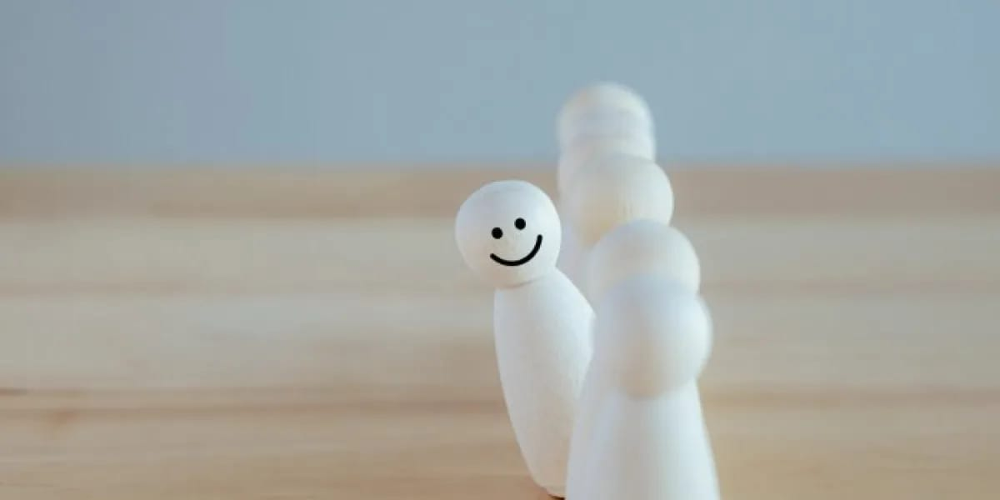
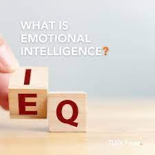

Wellness Foundations
Based on the PERMA model by Dr. Martin Seligman, this module helps individuals build a flourishing life.
- Healthy Habits: Nutrition, sleep, movement
- Positive Emotions: Gratitude and joy practices
- Engagement: Discovering flow and deep focus
- Relationships: Building trust and connection
- Meaning: Aligning with purpose and values
- Accomplishment: Goal setting and progress

Positive Psychology
Grounded in the science of human flourishing and evidence-based practices for lasting wellbeing.
- Introduction to Positive Psychology
- Strengths Discovery using VIA Character Strengths
- Behavioral Change through habit science
- Coping with Obstacles using resilience tools
- Emotional Uplift through gratitude
- Evaluation & Future Visioning

Emotional Intelligence
Inspired by Daniel Goleman's framework for understanding and managing emotions effectively.
- The Sailboat Metaphor for emotional navigation
- Understanding Emotions & EI
- Mastering Attention for emotional awareness
- Motivation: Emotions as data
- Emotion Regulation strategies
- Building Your Personal EI Plan
Mindfulness Mastery
Backed by research from Oxford and Harvard, integrating mindfulness into daily life and work.
- Introduction to Mindfulness
- Attention & The Now
- Non-Judgment & Acceptance
- Compassion and Ego awareness
- Goal-Oriented Mindfulness
- Formal Meditation Practices

Job Crafting
Based on research by Wrzesniewski & Dutton to redesign your work for greater satisfaction.
- Clarifying Values, Strengths & Interests
- Task Crafting: redesigning work tasks
- Relational Crafting: improving relationships
- Cognitive Crafting: reframing work meaning
- Action Plan & Reflection
Resilience Building
Informed by the Job Demands–Resources model for navigating adversity and stress.
- Sailboat Metaphor for navigating adversity
- Attention Mastery under stress
- Thought Power and cognitive flexibility
- Motivation to Push Forward
- Personalized Resilience Plan